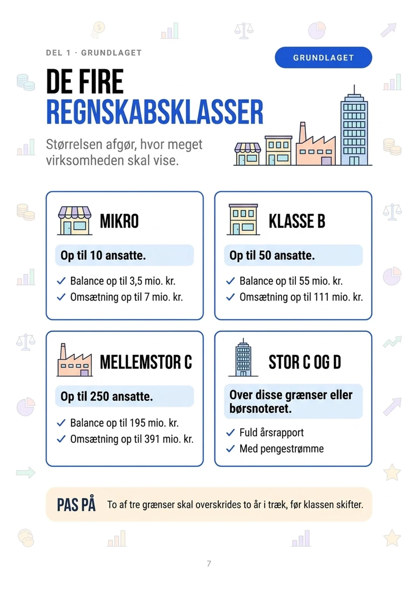
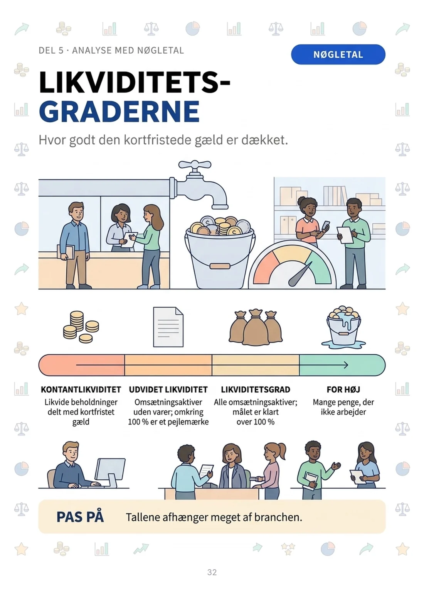
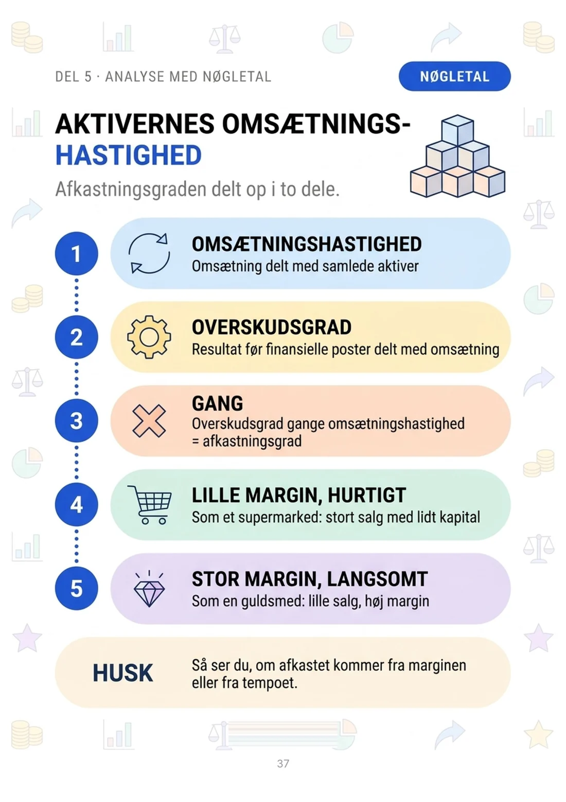

<div lang="pt-BR" dir="ltr"><section id="pagina-agentes">
  <div class="pa-faixa"><strong>Life Easy Ebooks</strong><span>Guia ilustrado <b>50 páginas</b></span></div>
  <header class="pa-hero">
    
    <h1 id="pa-titulo">Demonstrações financeiras <em>em imagens</em></h1>
    <h2>Como uma padaria pode ter lucro e ainda faltar dinheiro no caixa?</h2>
    <p>Uma venda a prazo ajuda a explicar. A padaria já pode reconhecer a receita, mas o dinheiro só entra quando o cliente paga. Neste guia da Life Easy Ebooks, você acompanha situações como essa em 50 páginas ilustradas e aprende a ler o balanço patrimonial, a demonstração do resultado e os indicadores financeiros.</p>
    <a class="pa-comprar" href="#produto">Quero o guia e os dois bônus por 129 DKK</a>
    <small>Pagamento único · Entrega por e-mail · 30 dias de garantia</small>
  </header>
  <div class="pa-beneficios"><ul class="pa-largura"><li><span class="pa-icone">✎</span><strong>Um tema por página</strong><span>Um desenho, explicações curtas e uma frase para lembrar.</span></li><li><span class="pa-icone">▤</span><strong>50 páginas ilustradas</strong><span>Do balanço aos indicadores, com 40 questões para revisar.</span></li><li><span class="pa-icone">§</span><strong>Regras da Dinamarca</strong><span>Das quatro classes de empresas ao estudo de uma padaria do tipo ApS.</span></li></ul></div>
  <section class="pa-bloco pa-largura"><h2 id="pa-previas">Por dentro do guia</h2><p class="pa-intro">Cada página apresenta um tema com um desenho, explicações curtas e uma frase para lembrar. Na prévia sobre depreciação, acompanhe como o custo de um equipamento é distribuído ao longo da vida útil. Na página sobre o resultado do exercício, siga os valores da receita até o lucro ou prejuízo.</p>
    <div class="pa-galeria">
      <figure><figcaption>Depreciação passo a passo</figcaption></figure>
      <figure><figcaption>Da receita ao resultado do exercício</figcaption></figure>
      <figure><figcaption>As quatro classes de empresas nas regras contábeis dinamarquesas</figcaption></figure>
      <figure><figcaption>Índices de liquidez</figcaption></figure>
      <figure><figcaption>Ativo, passivo e patrimônio líquido</figcaption></figure>
      <figure><figcaption>Demonstração do resultado da padaria</figcaption></figure>
      <figure><figcaption>Giro dos ativos</figcaption></figure>
      <figure><figcaption>Por que o lucro difere do dinheiro em caixa</figcaption></figure>
    </div>
  </section>
  <section class="pa-fundo"><div class="pa-bloco pa-largura"><h2>O que você vai aprender nas seis partes do livro</h2><ol class="pa-sumario">
    <li><div><small>Páginas 3–10</small><h3>Fundamentos</h3><p>Conheça o relatório anual, quem o utiliza e quais são as quatro classes de empresas previstas nas regras contábeis dinamarquesas.</p></div></li>
    <li><div><small>Páginas 11–17</small><h3>Balanço patrimonial</h3><p>Localize o caixa, os estoques, os valores a receber, as dívidas e o patrimônio líquido.</p></div></li>
    <li><div><small>Páginas 18–24</small><h3>Demonstração do resultado</h3><p>Acompanhe como custos, despesas, juros e impostos entram no cálculo do resultado do exercício.</p></div></li>
    <li><div><small>Páginas 25–29</small><h3>Notas e fluxos de caixa</h3><p>Use as notas para entender os valores apresentados e veja por que o lucro pode diferir da variação do caixa.</p></div></li>
    <li><div><small>Páginas 31–39</small><h3>Indicadores financeiros</h3><p>Calcule liquidez, capital de giro, rentabilidade, margens e giro dos ativos. Entenda o que cada medida ajuda a avaliar.</p></div></li>
    <li><div><small>Páginas 40–47</small><h3>Estudo de caso</h3><p>Leia as demonstrações da padaria fictícia Bageri Jensen ApS, compare dois anos e identifique os números que merecem atenção.</p></div></li>
  </ol><aside class="pa-revisao"><h3>Teste sua leitura com 40 questões</h3><p>Depois das quatro primeiras partes, responda às questões da página 30. Ao terminar o estudo da padaria, continue na página 48. Confira o raciocínio nas soluções comentadas da página 49 e use o resumo da página 50 para revisar o livro inteiro.</p></aside></div></section>
  <section class="pa-bloco pa-largura"><h2>Dois bônus para praticar e consultar</h2><div class="pa-dupla"><article><small>Bônus 1</small><h3>40 exercícios sobre demonstrações financeiras</h3><p>Uma lista adicional de exercícios com soluções, da depreciação ao cálculo dos prazos de recebimento e pagamento.</p><strong>Valor individual de 129 DKK</strong></article><article><small>Bônus 2</small><h3>30 fichas sobre indicadores e contas contábeis</h3><p>Definições, aplicações e cuidados de interpretação para consultar enquanto você lê um balanço.</p><strong>Valor individual de 99 DKK</strong></article></div></section>
  <section class="pa-fundo"><div class="pa-bloco pa-leitura"><h2>Para quem está aprendendo a ler um balanço</h2><p>Se você estuda contabilidade ou finanças, pode usar os desenhos para revisar a matéria e os exercícios para conferir seus cálculos.</p><p>Se administra uma empresa dinamarquesa do tipo ApS, o estudo da padaria ajuda a preparar perguntas para conversar com o banco ou com seu contador. O guia começa pelos fundamentos e segue as regras da Dinamarca.</p></div></section>
  <div class="pa-bloco pa-leitura"><section><h2>Como funciona a garantia de 30 dias?</h2><p>Se algum arquivo não chegar, não abrir ou se o conteúdo divergir da descrição da oferta, entre em contato com a loja em até 30 dias após a compra. A loja resolve o problema ou devolve o valor integral. Em caso de cobrança duplicada, você também pode solicitar a correção.</p></section><section class="pa-faq"><h2>Dúvidas antes da compra</h2>Qual é o idioma do livro?<p>A edição de referência é em dinamarquês. Esta página apresenta a oferta em português do Brasil.</p>O guia ensina a fazer lançamentos de débito e crédito?<p>O foco é a leitura e a análise das demonstrações financeiras anuais.</p>Como posso pagar?<p>A oferta de referência aceita cartão, Apple Pay e Google Pay, em pagamento único de 129 DKK.</p></section></div>
  <section class="pa-oferta" id="produto"><div class="pa-leitura"><h2 id="pa-preco">Guia ilustrado e dois bônus por 129 coroas dinamarquesas</h2><p>Os três materiais somam 357 DKK pelos valores individuais. O conjunto custa 129 DKK, uma economia de 228 DKK.</p><div class="pa-valor">357 DKK<strong>129 DKK</strong></div><p>O pagamento é único. Após a compra, você recebe os três PDFs por e-mail, em alta resolução para ler no celular ou imprimir.</p><a class="pa-comprar" href="#produto">Quero o guia e os dois bônus por 129 DKK</a></div></section>
</section></div>